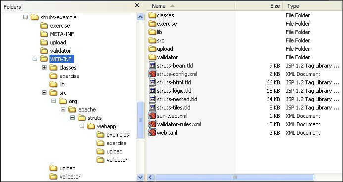
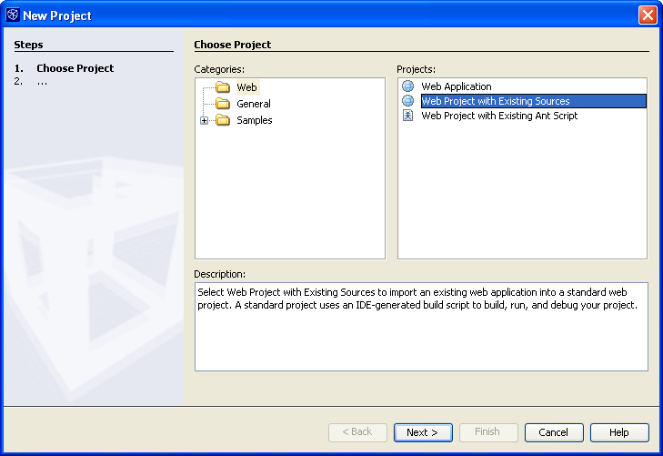
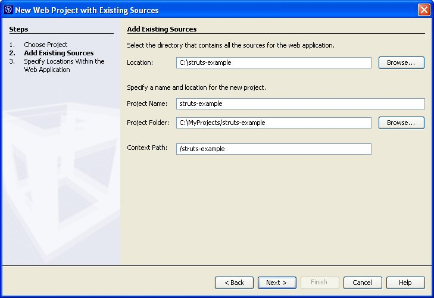
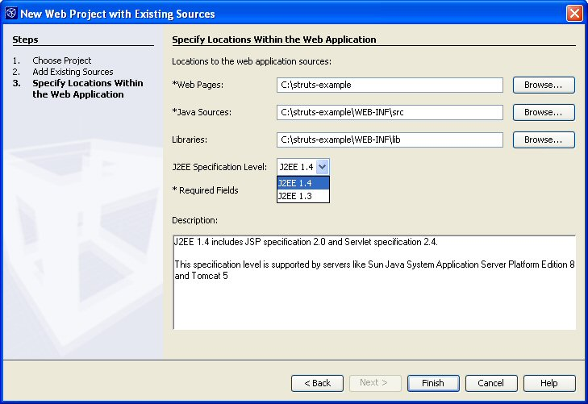
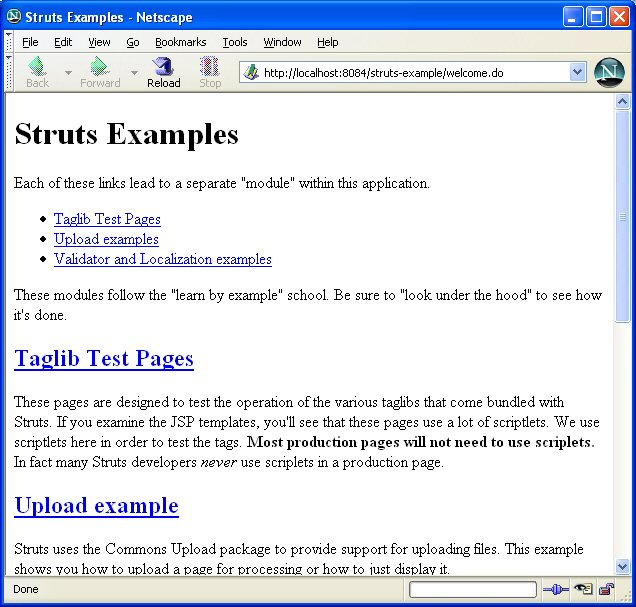
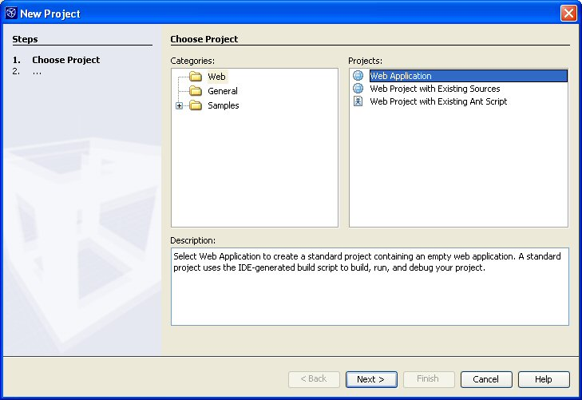
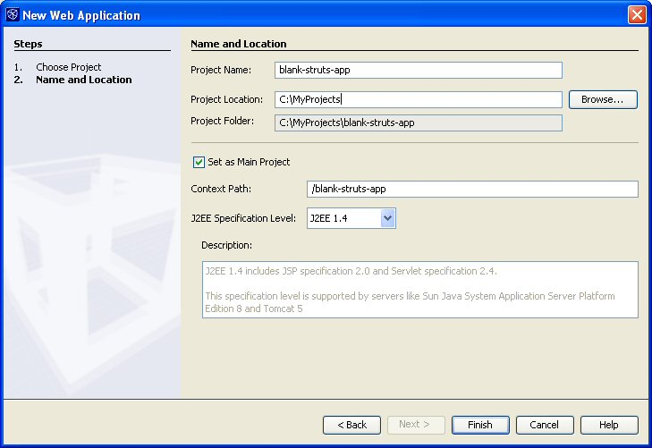

How to setup a basic Struts project using NetBeans IDE 4.0
Legal Disclamer
Please read
this
first.
* DISCLAIMER - This simple How-To shows you how easy it is to
use NetBeans IDE 4.0 to write code for the Struts
Action Framework. It just works straight out of the box.
Simply specify where your sources are
and where you want to store your application, and NetBeans IDE
4.0 does everything
you need -- it even generates a customized Ant build script
for you and hooks its targets
up to IDE commands such as "Build" and "Run".
This is mainly geared toward Struts users who are new to
NetBeans IDE 4.0, and don't want to spend
a lot of time figuring out the differences between their old
IDE and this one.
Let's get started
You will use wizards to set up and deploy the struts-mailreader in
5 steps.
Before we begin, let's create (or reuse) a folder to hold the
project. Copy the struts-mailreader.war
from the Struts Applications distribution and extract it, with the
result that it looks like this:

-
Create a new project.

-
The New Project wizard appears. Select "Web Project with
Existing Sources".
Do this when you want to use your own sources to create a
web application, but
you want the IDE to generate an Ant build script for you.

-
Specify the location of your sources, the location of your
new IDE project, and a project name.

-
Drill-down further and specify the location of your web
pages, Java sources, and libraries,
and decide whether you want your application to support
J2EE 1.4 or J2EE 1.3.

Now click Finish. That's it! You're done.
Let's take a look at the result in the Projects window,
and notice how
the Source Editor provides JSP code completion for Struts
JSP tag libraries:

Note that code completion for the struts-config.xml file
works automatically
if you have Internet access. If you use a proxy, it must
be enabled. If you
do not have Internet access, you can use the IDE to create
an OASIS XML Catalog,
which enables code completion for the struts-config.xml
file.
Now take a look in the Files window and browse through the
Ant build script that the IDE made for you:

-
Finally, run the Mailreader application. Right-click the
project node in the Projects window
and choose Run Project.
The Run Project command is hooked to the Run target in the
IDE-generated Ant script.
The Run target depends on targets that compile the
application, deploy it to the IDE's
default server, and display it in the IDE's default
browser.
So, when you choose "Run Project", the IDE uses the Ant
build script to compile, deploy, and display it!


Let's set up a blank application
Now you will use wizards to set up a new Struts
application in NetBeans IDE 4.0, again in 5 steps.
-
Create a new project.
-
The New Project wizard appears. Select "Web Application".

-
Specify the location of your new IDE project and a project
name,
and decide whether you want your application to support
J2EE 1.4 or J2EE 1.3.

Now click Finish.
-
Right-click the blank-struts-app node in the Projects
window and choose Properties.
Select Compiling Sources, click Add JAR/Folder and add the
libraries from the Struts distribution:
Click OK.
Now go to the distribution for the struts-blank
application on your filesystem.
- Copy the struts-config.xml, tlds, and all the
other configuration files (except the web.xml
file)
from the WEB-INF folder and paste them into your
web/WEB-INF folder.
- Copy MessageResources.properties from
WEB-INF/classes/resources into your src
folder.
-
Test your new Struts functionality in the Source Editor:

For further information, see: